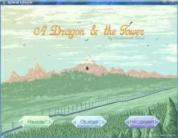
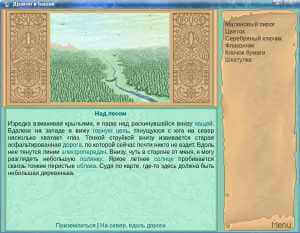

Предыстория
официальная страница игрыВы -- дракон. Самый настоящий -- большой, крылатый, летающий и даже способный колдовать.
Уже много столетий, вы живете на Земле. Нет, не среди людей. Грязные и перенаселенные города этих созданий вас не прельщают. К тому же, там вам пришлось бы скрывать вашу истинную сущность.
Только здесь, в созданной вашей магией сети пещер, вы можете быть собой. Это место надежно сокрыто от глаз людей и их искусственных слуг -- радиолокаторов и спутников.
Но сейчас настало время покинуть родное гнездо. Старая карта, хранимая вами испокон веков, готова раскрыть свои секреты своему владельцу, то есть вам!
Игра
Дракон и Башня это фентезийная текстовая приключенческая игра.
Игровой процесс традиционный для игр на движке INSTEAD. Вам предстоит исследовать мир, собирать и использовать предметы, общаться с персонажами, решать головоломки и многое другое.
В игре пять концовок(некоторые из них похожи, но не одинаковы).
И игра будет доступна бесплатно.
 
{kind=link}
{kind=link}
Демонстрационное видео [13.12.2020]
Новость с демонстрационным видео на сайте автора ( там же можно загрузить данное видео к себе на компьютер): [Ссылка/Hiperligo]
Над игрой Khaelenmore Thaal работает вместе с Саброй Найкоми
[Вернуться|Revenu]